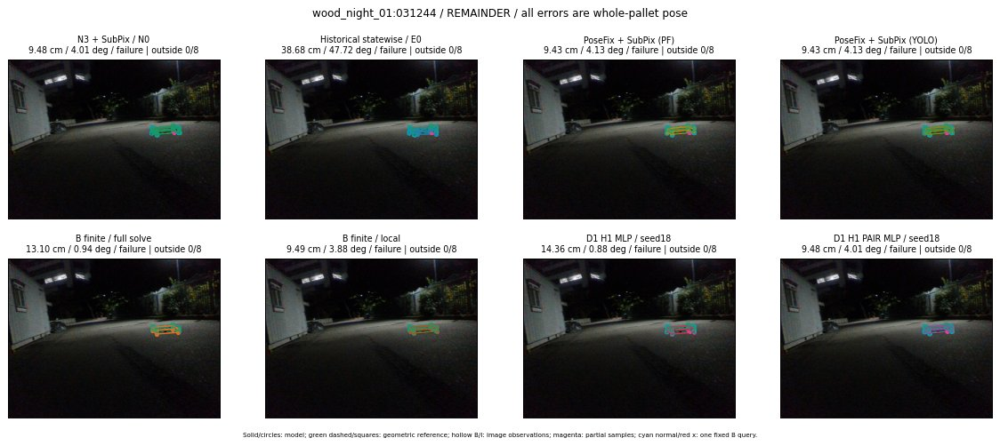

Whole-pallet pose errors; reference is a fixed geometric annotation, not certified physical GT.

Scores are uncalibrated logits. N0 retention is a numerical pose alias; it differs from H0 none or B fallback. B/I and profiles in baseline/B panels are original observations; L panels use new D1 observations. Only one deterministic supported B query is shown in a thumbnail; full support counts are below. Grey privacy rectangles edit the display copy only and are unrelated to O states; all observations were measured on original pixels. Thumbnails use JPEG quality85; detailed scientific panels are PNG.
| Method | Whole pose / cm, deg | Actual source | Selected ID | Score | Archived candidates | Eligible | N0 retained | H0 none | Fallback | Finite profiles |
|---|---|---|---|---|---|---|---|---|---|---|
| Raw YOLO + F | 15.54 cm / 5.15 deg / failure | OTHER | None | N/A | N/A | N/A | False | N/A | None | N/A |
| N3 + SubPix / N0 | 9.48 cm / 4.01 deg / failure | N0 | None | N/A | N/A | N/A | True | N/A | None | N/A |
| Historical statewise / E0 | 38.68 cm / 47.72 deg / failure | E0_REGENERATED | None | N/A | N/A | N/A | False | N/A | False | N/A |
| PoseFix raw | 11.17 cm / 4.07 deg / failure | OTHER | None | N/A | N/A | N/A | False | N/A | None | N/A |
| PoseFix + SubPix (PF) | 9.43 cm / 4.13 deg / failure | OTHER | None | N/A | N/A | N/A | False | N/A | False | historical support records 9; finite audit N/A |
| PoseFix + SubPix (YOLO) | 9.43 cm / 4.13 deg / failure | OTHER | None | N/A | N/A | N/A | False | N/A | False | historical support records 9; finite audit N/A |
| Historical L, seed18 | 9.48 cm / 4.01 deg / failure | N0 | N0 | N/A | 47 | 47 | True | True | True | N/A |
| Historical B fixed bank | 13.10 cm / 0.94 deg / failure | OTHER | LOGGED/G13/ORIGINAL_WD/outline_consider/33 | N/A | N/A | N/A | False | N/A | False | N/A |
| Historical B full | 13.10 cm / 0.94 deg / failure | OTHER | LOGGED/G13/ORIGINAL_WD/outline_consider/33 | N/A | N/A | N/A | False | N/A | False | N/A |
| Historical edge full | 13.10 cm / 0.94 deg / failure | OTHER | LOGGED/G13/ORIGINAL_WD/outline_consider/33 | N/A | N/A | N/A | False | N/A | False | N/A |
| Historical AB full | 12.97 cm / 0.94 deg / failure | OTHER | NEW/AB/ORIGINAL_WD/h0/LOGGED/G13/ORIGINAL_WD/outline_consider/33/PROPOSED_NATIVE_YAW_0 | N/A | N/A | N/A | False | N/A | False | N/A |
| B finite / fixed bank | 13.10 cm / 0.94 deg / failure | OTHER | LOGGED/G13/ORIGINAL_WD/outline_consider/33 | N/A | N/A | N/A | False | N/A | False | 0/0 |
| B finite / full solve | 13.10 cm / 0.94 deg / failure | OTHER | LOGGED/G13/ORIGINAL_WD/outline_consider/33 | N/A | N/A | N/A | False | N/A | False | 0/0 |
| B finite / local | 9.49 cm / 3.88 deg / failure | OTHER | NEW_FINITE/B/ORIGINAL_WD/h0/N0_LOCAL_SAME_PHYSICAL_POSE/ORIGINAL_WD | N/A | N/A | N/A | False | N/A | False | 0/0 |
| Edge finite / full solve | 13.10 cm / 0.94 deg / failure | OTHER | LOGGED/G13/ORIGINAL_WD/outline_consider/33 | N/A | N/A | N/A | False | N/A | False | 0/0 |
| D0 H0 MLP / seed18 | 9.48 cm / 4.01 deg / failure | N0 | N0 | -1.8107867240905762 | 31 | 31 | True | True | True | N/A |
| D0 H0 MLP / seed19 | 9.48 cm / 4.01 deg / failure | N0 | N0 | -1.2822095155715942 | 31 | 31 | True | True | True | N/A |
| D0 H0 MLP / seed20 | 9.48 cm / 4.01 deg / failure | N0 | N0 | -2.8114986419677734 | 31 | 31 | True | True | True | N/A |
| D0 H1 MLP / seed18 | 14.36 cm / 0.88 deg / failure | OTHER | G13/ORIGINAL_WD/sample/1 | -5.8914971351623535 | 31 | 31 | False | False | False | N/A |
| D0 H1 MLP / seed19 | 14.36 cm / 0.88 deg / failure | OTHER | G13/ORIGINAL_WD/sample/1 | -5.900463104248047 | 31 | 31 | False | False | False | N/A |
| D0 H1 MLP / seed20 | 14.36 cm / 0.88 deg / failure | OTHER | G13/ORIGINAL_WD/sample/1 | -6.163018226623535 | 31 | 31 | False | False | False | N/A |
| D1 H0 MLP / seed18 | 9.48 cm / 4.01 deg / failure | N0 | N0 | 4.6294732093811035 | 31 | 31 | True | True | True | N/A |
| D1 H0 MLP / seed19 | 9.48 cm / 4.01 deg / failure | N0 | N0 | 4.314676284790039 | 31 | 31 | True | True | True | N/A |
| D1 H0 MLP / seed20 | 9.48 cm / 4.01 deg / failure | N0 | N0 | 4.083319187164307 | 31 | 31 | True | True | True | N/A |
| D1 H1 MLP / seed18 | 14.36 cm / 0.88 deg / failure | OTHER | G13/ORIGINAL_WD/sample/1 | -3.304107427597046 | 31 | 31 | False | False | False | N/A |
| D1 H1 MLP / seed19 | 14.36 cm / 0.88 deg / failure | OTHER | G13/ORIGINAL_WD/sample/1 | -3.1196463108062744 | 31 | 31 | False | False | False | N/A |
| D1 H1 MLP / seed20 | 14.36 cm / 0.88 deg / failure | OTHER | G13/ORIGINAL_WD/sample/1 | -3.227431058883667 | 31 | 31 | False | False | False | N/A |
| D1 H1 ROLE AFFINE / seed18 | 9.48 cm / 4.01 deg / failure | N0 | N0 | -1.3589422702789307 | 31 | 31 | True | False | False | N/A |
| D1 H1 ROLE AFFINE / seed19 | 9.48 cm / 4.01 deg / failure | N0 | N0 | -0.8100799918174744 | 31 | 31 | True | False | False | N/A |
| D1 H1 ROLE AFFINE / seed20 | 9.48 cm / 4.01 deg / failure | N0 | N0 | -0.9798893928527832 | 31 | 31 | True | False | False | N/A |
| D1 H1 PAIR MLP / seed18 | 9.48 cm / 4.01 deg / failure | N0 | N0 | -2.4108774662017822 | 31 | 2 | True | False | False | N/A |
| D1 H1 PAIR MLP / seed19 | 9.48 cm / 4.01 deg / failure | N0 | N0 | -2.446514368057251 | 31 | 2 | True | False | False | N/A |
| D1 H1 PAIR MLP / seed20 | 9.48 cm / 4.01 deg / failure | N0 | N0 | -3.3007428646087646 | 31 | 2 | True | False | False | N/A |
| D1 H1 PAIR ROLE AFFINE / seed18 | 9.48 cm / 4.01 deg / failure | N0 | N0 | -1.4441007375717163 | 31 | 2 | True | False | False | N/A |
| D1 H1 PAIR ROLE AFFINE / seed19 | 9.48 cm / 4.01 deg / failure | N0 | N0 | -1.7999321222305298 | 31 | 2 | True | False | False | N/A |
| D1 H1 PAIR ROLE AFFINE / seed20 | 9.48 cm / 4.01 deg / failure | N0 | N0 | -1.5400362014770508 | 31 | 2 | True | False | False | N/A |
| Regenerated common E0 | 38.68 cm / 47.72 deg / failure | E0_REGENERATED | E0_REGENERATED | N/A | N/A | N/A | False | N/A | False | N/A |